Main Challenge
Convex Coverage Set (CCS)
The size of the CCS grows
exponentially with the
number of reward features!
Often infeasible to compute
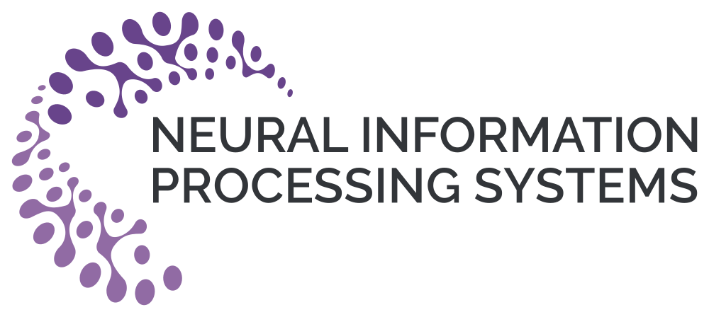
When solving sequential decision-making problems, humans
combine previously-learned behaviors to quickly adapt to new tasks
Mastering the game of Go with deep neural networks and tree search. Silver, D., Huang, A., Maddison, C. et al.. Nature 529, (2016)

Autonomous navigation of stratospheric balloons using reinforcement learning. Bellemare, M.G., Candido, S., Castro, P.S. et al.. Nature 588, (2020)
Magnetic control of tokamak plasmas through deep reinforcement learning. Degrave, J., Felici, F. et al. Nature 602, (2022)
… and many other applications
A Long-Term Objective of AI:
How to build generalist AI agents capable of learning multiple behaviors and solve multiple tasks?
Reward function is a linear combination of features \;\phi(s,a,s') \in \mathbb{R}^d
r_{\textcolor{#ED7D31}{\boldsymbol{w}}}(s,a,s') = \phi(s,a,s') \cdot \textcolor{#ED7D31}{\boldsymbol{w}}
Successor Features (SFs)
\psi^{\textcolor{#0070C0}{\pi}}(s,a) \triangleq \mathbb{E}_{\textcolor{#0070C0}{\pi}}\left[\sum_{i=0}^{\infty} \gamma^i \phi_{t+i} \;\middle|\; S_t = s, A_t = a\right]
E.g.:
\psi^{\textcolor{#0070C0}{\pi}}(s,a) \triangleq \mathbb{E}_{\textcolor{#0070C0}{\pi}}\left[\begin{array}{rl} \textcolor{#548235}{\mathit{velocity}_t} & + \gamma\, \textcolor{#548235}{\mathit{velocity}_{t+1}} + \dots \\ \textcolor{#C00000}{\mathit{energy}_t} & + \gamma\, \textcolor{#C00000}{\mathit{energy}_{t+1}} + \dots \\ \textcolor{#203864}{\mathit{distance}_t} & + \gamma\, \textcolor{#203864}{\mathit{distance}_{t+1}} + \dots \end{array}\right]
Fast reinforcement learning with generalized policy updates. Barreto et al. Proceedings of the National Academy of Sciences, 2020.
Reward function is a linear combination of features \;\phi(s,a,s') \in \mathbb{R}^d
r_{\textcolor{#ED7D31}{\boldsymbol{w}}}(s,a,s') = \phi(s,a,s') \cdot \textcolor{#ED7D31}{\boldsymbol{w}}
Successor Features (SFs)
\psi^{\textcolor{#0070C0}{\pi}}(s,a) \triangleq \mathbb{E}_{\textcolor{#0070C0}{\pi}}\left[\sum_{i=0}^{\infty} \gamma^i \phi_{t+i} \;\middle|\; S_t = s, A_t = a\right]
Generalized Policy Evaluation (GPE)
directly evaluates how well a policy \pi would perform under
any reward function r_{\textcolor{#ED7D31}{\boldsymbol{w}_i}} (without having to test/deploy it!):
q^{\textcolor{#0070C0}{\pi}}_{\textcolor{#ED7D31}{\boldsymbol{w}_i}}(s,a) = \psi^{\textcolor{#0070C0}{\pi}}(s,a) \cdot \textcolor{#ED7D31}{\boldsymbol{w}_i}
Fast reinforcement learning with generalized policy updates. Barreto et al. Proceedings of the National Academy of Sciences, 2020.
\textcolor{#00B050}{\pi_1}
w = [1,0,0]
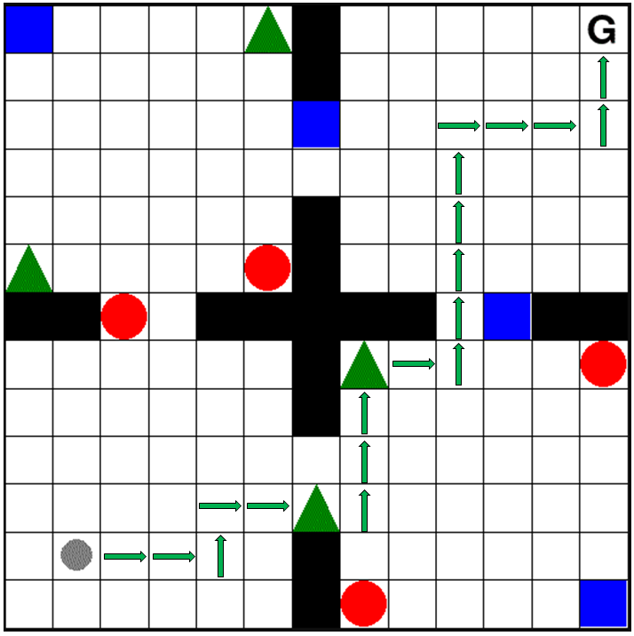
\textcolor{#0070C0}{\pi_2}
w = [0,1,0]
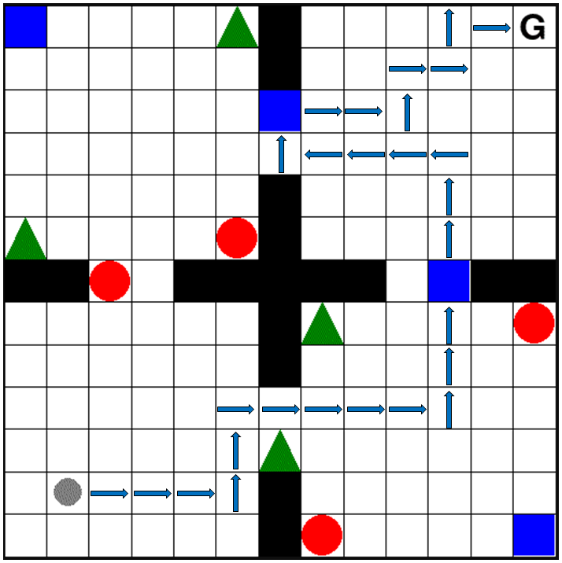
zero-shot
\pi^{GPI}(s;\textcolor{#ED7D31}{w}) \in \operatorname*{arg\,max}_{\textcolor{#C00000}{a}\in\mathcal{A}}\ \max_{\pi\in\{\textcolor{#00B050}{\pi_1},\textcolor{#0070C0}{\pi_2}\}} q^{\pi}_{\textcolor{#ED7D31}{w}}(s,\textcolor{#C00000}{a})
\textcolor{#ED7D31}{w} = [\textcolor{#00B050}{1},\textcolor{#0070C0}{1},0]
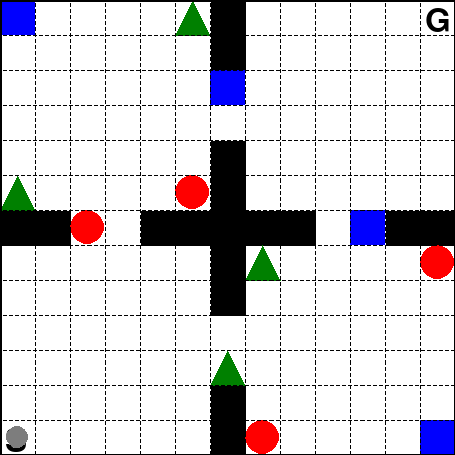
Generalized Policy Improvement (GPI)
is the computation of a policy \pi' that improves
over a set of policies \Pi given any new reward weights \boldsymbol{w}
\pi^{GPI}(s\,;\textcolor{#ED7D31}{w}) \in \operatorname*{arg\,max}_{\textcolor{#C00000}{a}\in\mathcal{A}}\ \max_{\textcolor{#0070C0}{\pi}\in\Pi}\ q^{\textcolor{#0070C0}{\pi}}_{\textcolor{#ED7D31}{w}}(s,\textcolor{#C00000}{a})
GPI Theorem
q^{GPI}_{\textcolor{#ED7D31}{w}}(s,a) \geq \max_{\textcolor{#0070C0}{\pi}\in\Pi} q^{\textcolor{#0070C0}{\pi}}_{\textcolor{#ED7D31}{w}}(s,a) \qquad \textit{for any } \textcolor{#ED7D31}{w} \in \mathcal{W}
However, there are no guarantees that \boldsymbol{\pi^{GPI}} will be optimal for a new task!
Successor Features for Transfer in Reinforcement Learning. Barreto et al. (NeurIPS 2017)
\pi^{OK}_{\textcolor{#7030A0}{\omega}}(s\,;\Pi) \in \operatorname*{arg\,max}_{\textcolor{#C00000}{a}\in\mathcal{A}}\ \max_{\textcolor{#0070C0}{\pi}\in\Pi}\ \psi^{\textcolor{#0070C0}{\pi}}(s,\textcolor{#C00000}{a}) \cdot \textcolor{#7030A0}{\omega}(s)
The Option Keyboard: Combining Skills in Reinforcement Learning. Barreto et al. (NeurIPS 2019)
Convex Coverage Set (CCS)
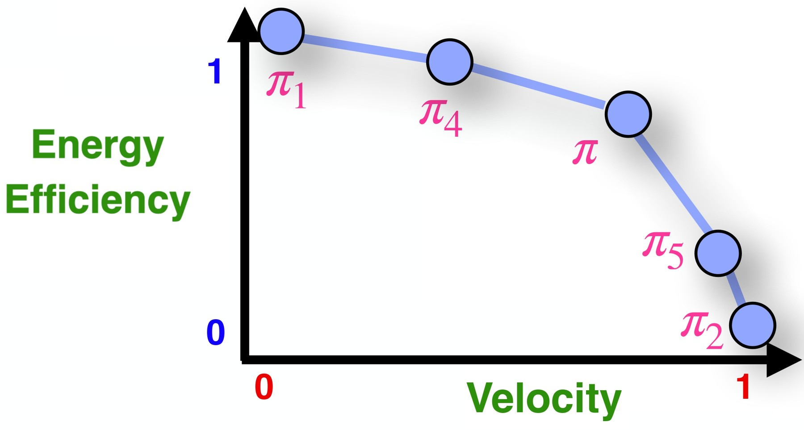
If \Pi is a set of policies
whose SFs form a CCS, then
GPI directly identifies optimal policies
for any new tasks!
Theorem 3.2. Let \Pi \equiv \{\pi_i\}_{i=1}^n be a set of policies such that the set of their expected SFs, \Psi = \{\psi^{\pi_i}\}_{i=1}^n, constitute a CCS (Eq. (14)). Then, given any weight vector \mathbf{w}\in\mathcal{W}, the GPI policy \pi^{GPI}(s;\mathbf{w}) \in \arg\max_{a\in\mathcal{A}} \max_{\pi\in\Pi} q^{\pi}_{\mathbf{w}}(s,a) is optimal with respect to \mathbf{w}: v^{GPI}_{\mathbf{w}} = v^*_{\mathbf{w}}.
\text{CCS} = \{\boldsymbol{\psi}^{\pi} \mid \exists\, \mathbf{w} \text{ s.t. } \forall \boldsymbol{\psi}^{\pi'},\ \boldsymbol{\psi}^{\pi} \cdot \mathbf{w} \geq \boldsymbol{\psi}^{\pi'} \cdot \mathbf{w}\}
Optimistic Linear Support and Successor Features as Basis for Optimal Policy Transfer. Alegre et al. (ICML 2022)
Convex Coverage Set (CCS)
The size of the CCS grows
exponentially with the
number of reward features!
Often infeasible to compute
\Pi_\mathrm{k}
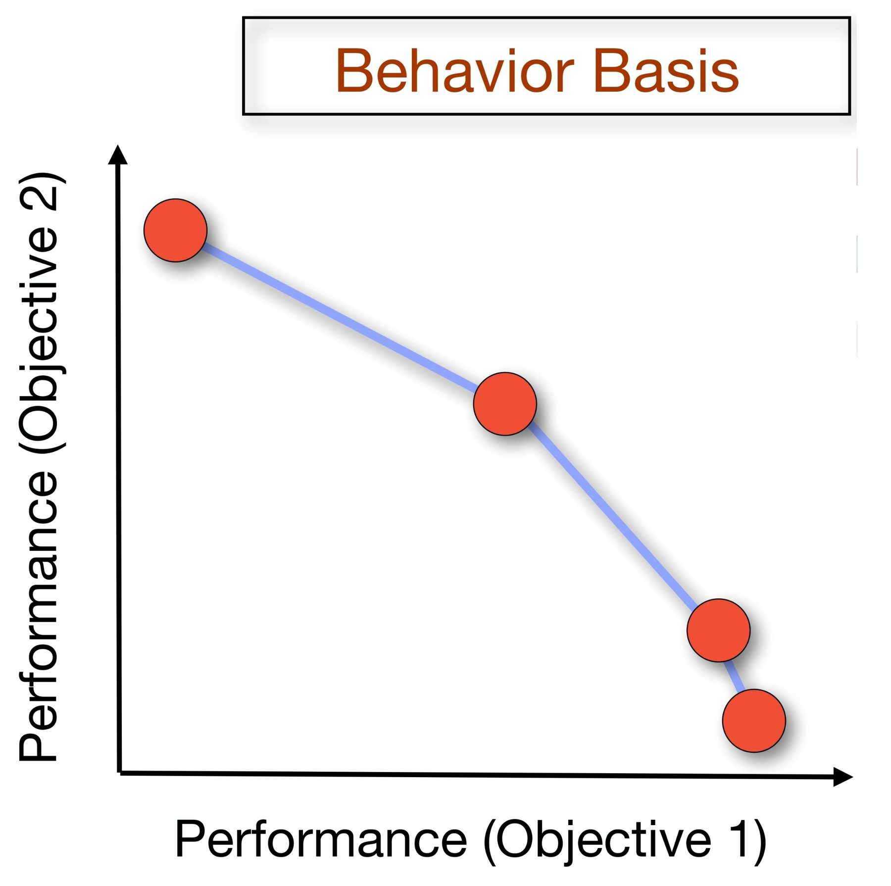
Task w
+
Meta-Policy \omega
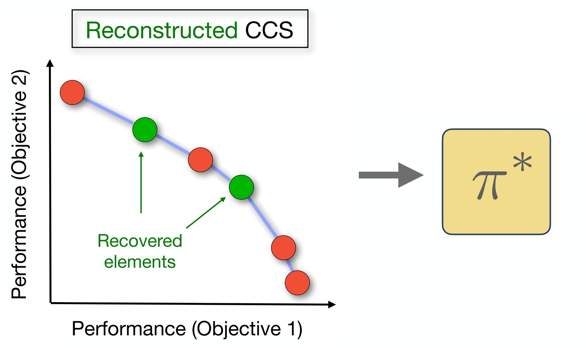
\pi^{OK}_{\textcolor{#7030A0}{\omega}}(s,\textcolor{#ED7D31}{w}\,;\Pi_\mathrm{k}) \in \operatorname*{arg\,max}_{\textcolor{#C00000}{a}\in\mathcal{A}}\ \max_{\textcolor{#0070C0}{\pi}\in\Pi_\mathrm{k}}\ \psi^{\textcolor{#0070C0}{\pi}}(s,\textcolor{#C00000}{a}) \cdot \textcolor{#7030A0}{\omega}(s,\textcolor{#ED7D31}{w})
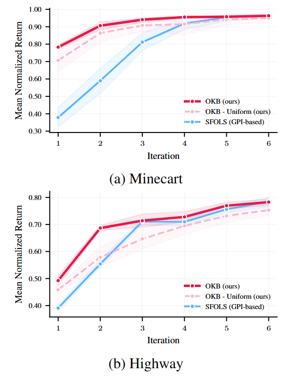
(a) Minecart
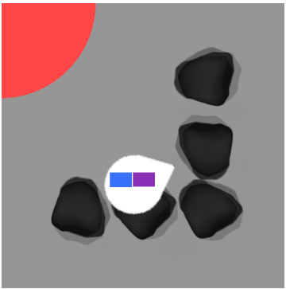
(b) Highway
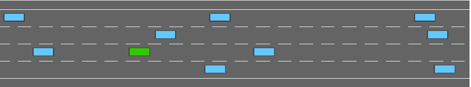
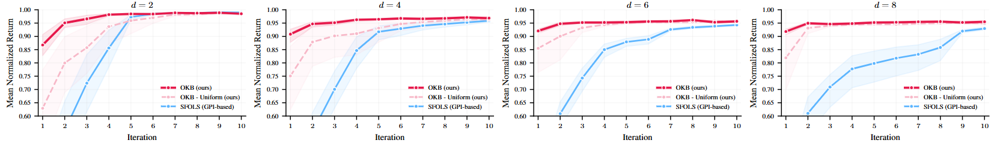
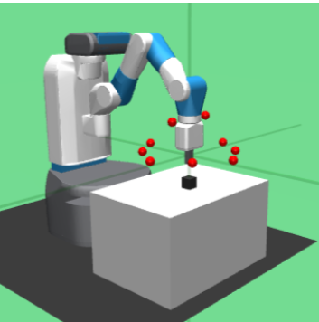
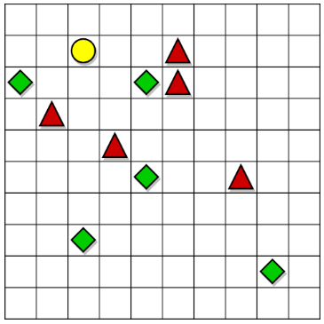
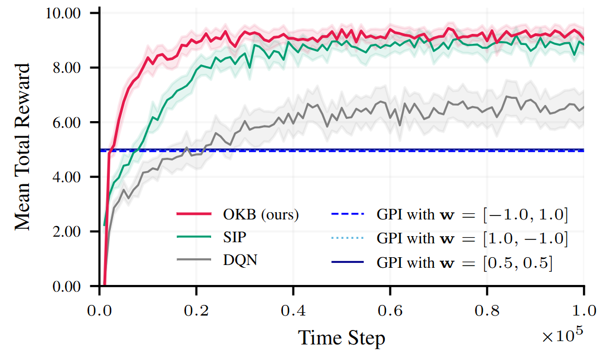
After OKB learns a behavior basis \Pi_k, a meta-policy can also be trained to solve a task with a non-linear reward function.
OKB can optimally solve some classes of tasks with non-linear rewards (Prop. 4.4).
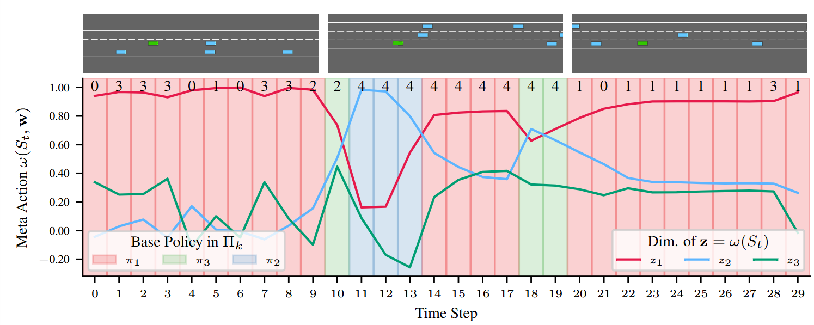